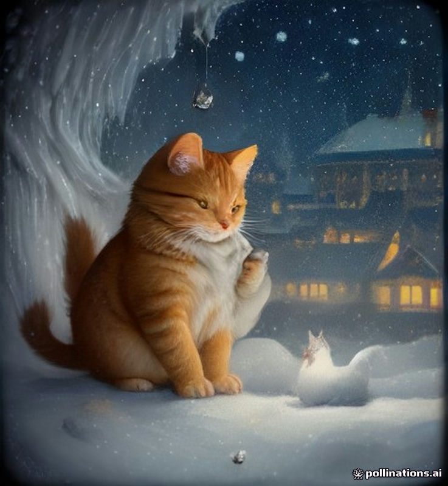
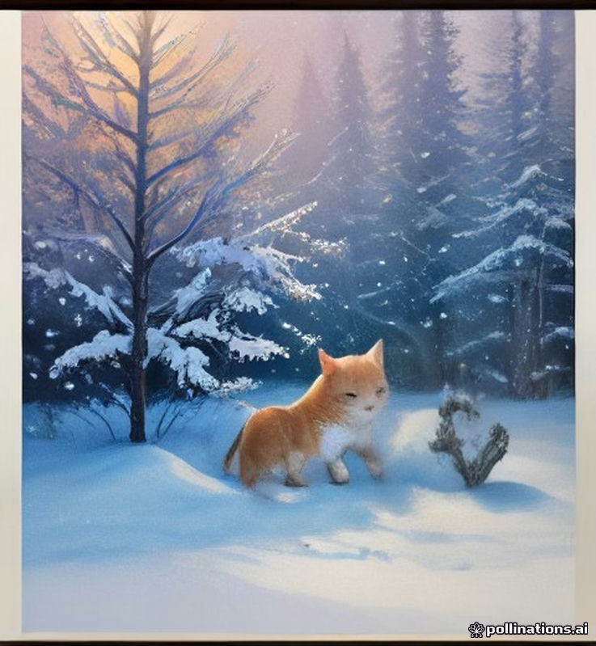
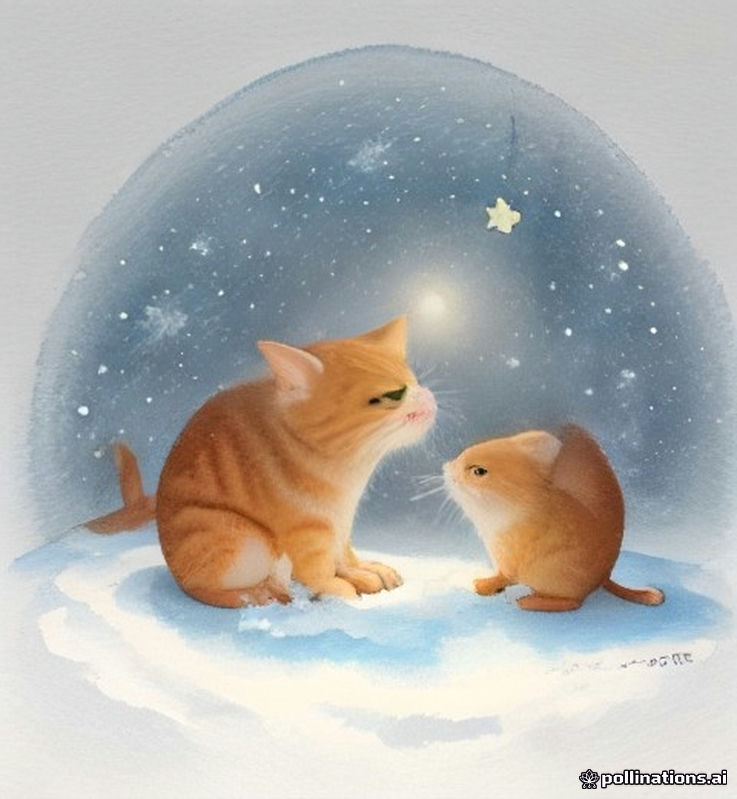
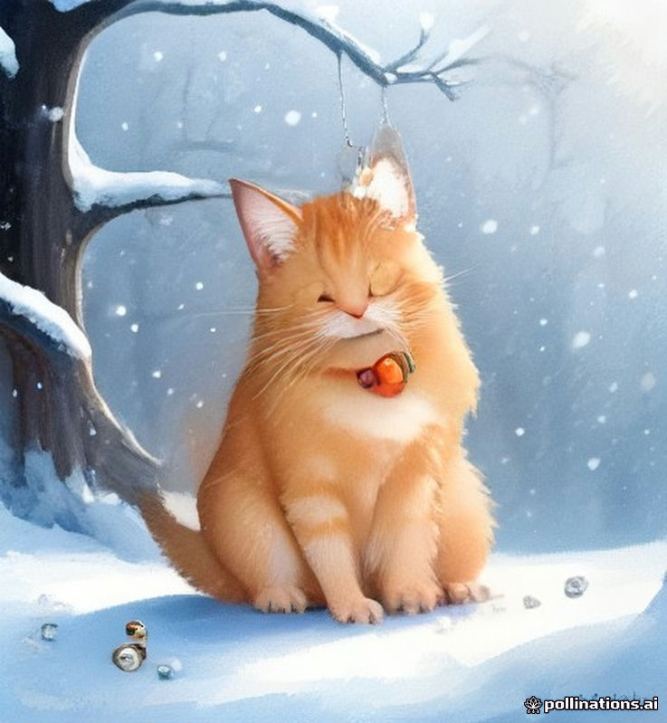
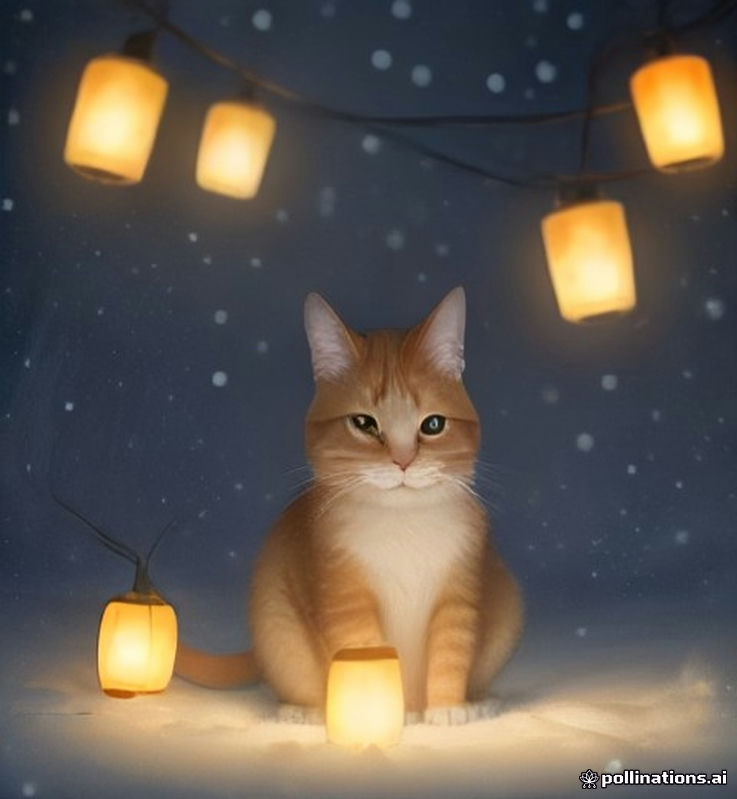

When Pip discovers a quiet little silver bell buried in the frost, he and Loki learn how even the smallest chime can warm a chilly day.

Winter had dusted Loki's Town in soft white sugar. The cobbles were hidden beneath fluffy drifts, and frost curled like delicate fern leaves along the wooden fence posts. Pip sneezed softly from his perch on Loki's head, bundled in a tiny red wool scarf. As Loki took a slow step through the powder, Pip spotted something bright winking beneath a low evergreen branch. It wasn't ice, and it wasn't a fallen berry. Pip squeaked with excitement and scrambled down Loki's front paw to investigate the mysterious shiny glint.

Pip scooped away the cold snow with his little paws until he revealed a tiny silver bell, no larger than a hazelnut. It had a delicate brass loop at the top and a small star etched into its side. Pip gave it a gentle nudge. Tink! The sound was crisp and clear, floating through the silent winter air like a drop of warm honey. Loki leaned down, touching his nose to the bell. It didn't belong to any collar in town, but it felt special, as if the winter wind had dropped it just for them.

Pip wanted the bell to have a proper home where everyone could hear its cheerful song. Together, Loki and Pip carried it to the town plaza fountain, which was frozen over like a shiny round mirror. Loki helped Pip loop a sturdy strand of teal yarn through the bell's top. Then, Pip climbed high into the low branches of the old oak tree near the plaza and tied the bell securely to a twig. Every time the crisp breeze blew, the bell sang a sweet, gentle ring across the quiet town.

As twilight settled over the cozy roofs, the street lanterns glowed warm amber against the deep blue dusk. Neighbors stopped by the plaza to listen to the soft chime of the silver bell dancing in the wind. Pip sat proudly back on top of Loki's head, purring along with the music. It turned out that winter didn't need grand fireworks or noisy celebrations—sometimes all it took to warm a frosty evening was one tiny mouse, a small silver bell, and a song shared with friends.